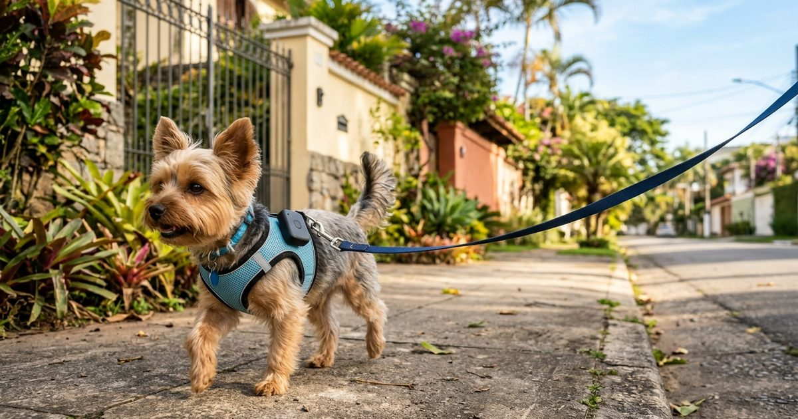
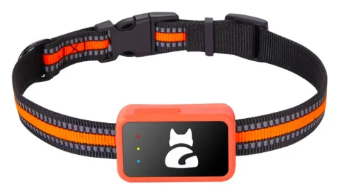
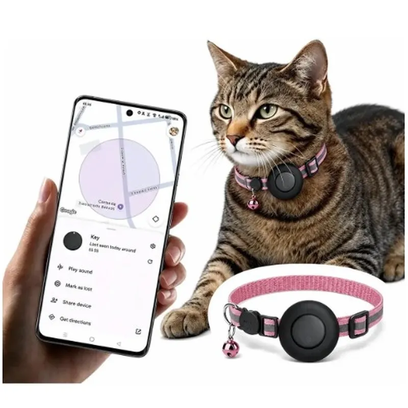
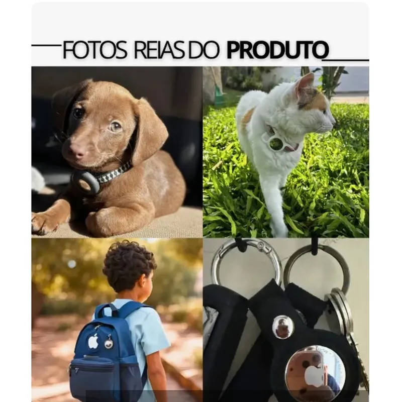
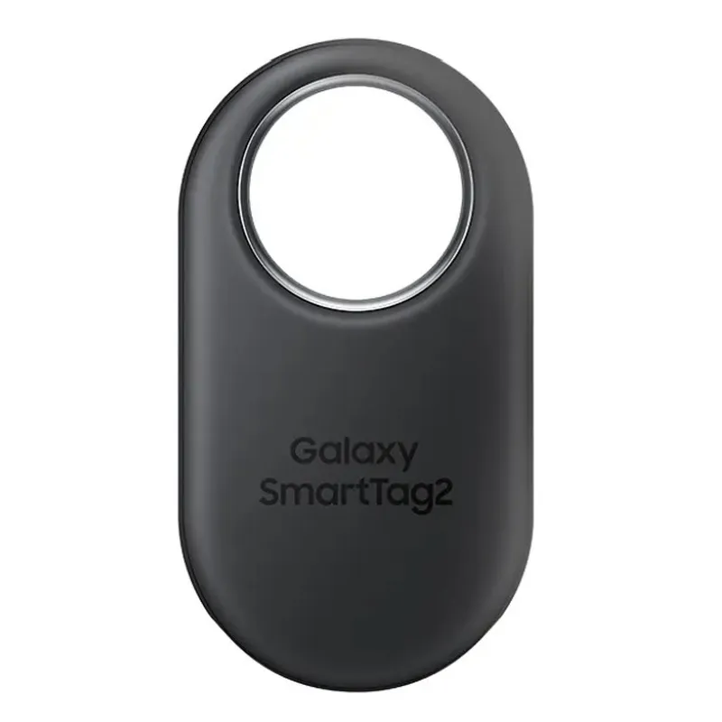

Coleira GPS para Cachorro Pequeno: 6 Rastreadores Leves Comparados

Para cachorro pequeno que já fugiu ou passeia longe, a coleira GPS mais completa que encontramos é a The Pet GPS 4G: vem em tamanho P (20 a 30 cm), tem chip 4G com 12 meses de dados inclusos e o módulo pesa 42 g, por R$ 718 no Mercado Livre (12/11/2026). Para cães muito pequenos, o ANXK G68 é o GPS 4G mais leve da nossa pesquisa, com 27 g, mas pede chip à parte. Se o cão vive em apartamento e o risco é escapar pela porta, uma tag Bluetooth de 9 a 11 g resolve na cidade sem mensalidade. Só que ela não é GPS.
The Pet GPS 4G em tamanho P: GPS em tempo real, com chip e 1 ano de dados inclusos.Link de afiliado — sem custo extra para você.
Ver preço no Mercado Livre →Escolha rápida
- Melhor no geral para cão pequeno: The Pet GPS 4G (R$ 718, tamanho P, 1 ano de dados incluso)
- GPS 4G mais leve, para cão muito pequeno: ANXK G68 (27 g, R$ 298,99, mais o chip)
- Sem mensalidade, para iPhone: kit coleira P com tag Apple (R$ 123,19, tag de 9 g)
- Sem mensalidade, para qualquer Android: coleira P com tag Google (R$ 151,99)
- Para prender no peitoral que o cão já usa (iPhone): Apple AirTag (11 g, kit com 2 por R$ 417)
- Para celular Samsung Galaxy: Galaxy SmartTag2 (R$ 133,99)
Quanto Pesa um Rastreador e Quanto Isso Pesa no Cão
Muitos guias dizem que o rastreador ideal para cão pequeno pesa 8 ou 9 gramas. O problema é que aparelhos desse peso são tags Bluetooth, não GPS. Um rastreador GPS de verdade carrega antena, modem 4G e bateria recarregável, e os mais leves que encontramos no Mercado Livre pesam 27 g. Fora do Brasil, a faixa é parecida: o Tractive TG6 pesa 39 g e o Appego, vendido na Petz, 35 g.
Não existe um limite oficial de peso para o rastreador. Uma forma prática de avaliar é ver quanto ele representa do peso do cão:
| Peso do cão | Tag Bluetooth (9–11 g) | ANXK G68 (27 g) | The Pet GPS (42 g) |
|---|---|---|---|
| 2 kg (Chihuahua, Yorkshire mini) | 0,5% | 1,4% | 2,1% |
| 3 kg (Pinscher, Yorkshire) | 0,3–0,4% | 0,9% | 1,4% |
| 5 kg (Shih Tzu, Maltês) | 0,2% | 0,5% | 0,8% |
| 8 kg (Lhasa, Poodle) | 0,1% | 0,3% | 0,5% |
Pesos de raça são aproximados; use o peso real do seu cão. A partir de uns 4 a 5 kg, qualquer um dos seis aparelhos fica leve. Abaixo de 3 kg, prefira o mais leve que resolva o seu caso e coloque-o no peitoral. Para o mesmo cão, o tamanho também conta: o módulo da The Pet GPS mede 6 x 3,3 x 1,9 cm, e a AirTag tem 3,2 cm de diâmetro.
Coleira ou Peitoral? O Cuidado com a Traqueia
Raças pequenas como Yorkshire, Lulu da Pomerânia, Chihuahua e Poodle toy são as mais afetadas pelo colapso de traqueia, que causa uma tosse seca, parecida com um grasnido. O American Kennel Club recomenda usar peitoral em vez de coleira nesses cães, para não pressionar o pescoço. Uma revisão da Today's Veterinary Practice pondera que o peitoral não impede a doença de avançar, mas evitar pressão no pescoço é sensato.
Para o rastreador, isso significa:
- Guia sempre no peitoral, nunca na coleira que segura o rastreador.
- Se o cão tosse ou já tem diagnóstico, prenda o rastreador no peitoral com suporte ou argola. As tags (AirTag, SmartTag2) são as mais fáceis de prender.
- A coleira do rastreador deve ficar folgada: passe dois dedos entre a coleira e o pescoço.
- Tosse que não passa, dificuldade para respirar ou gengiva arroxeada pedem veterinário. Dificuldade respiratória é emergência.
Comparativo: 6 Rastreadores para Cachorro Pequeno
Preços consultados no Mercado Livre entre 12/11 e 16/11/2026 (data de cada um nos cards). Confira no link antes de comprar.
| Modelo | Tipo | Peso | Tamanho para cão pequeno | Alcance | Mensalidade | Celular | Preço | |
|---|---|---|---|---|---|---|---|---|
| The Pet GPS 4G | GPS 4G | 42 g (módulo) | Coleira P: 20 a 30 cm | Ilimitado com 4G | 12 meses inclusos | Android e iPhone | R$ 718 | Ver preço |
| ANXK G68 | GPS 4G | 27 g | Coleira de náilon; confirme a medida | Ilimitado com 4G | Chip à parte | Android e iPhone | R$ 298,99 | Ver preço |
| Kit coleira + tag Apple | Tag Bluetooth | 9 g (tag) | Coleira P: 30,5 a 35,5 cm | iPhones por perto | Nenhuma | Só iPhone | R$ 123,19 | Ver preço |
| Coleira + tag Google | Tag Bluetooth | Não informado | Coleira P: 22 a 35 cm | Androids por perto | Nenhuma | Android 9+ | R$ 151,99 | Ver preço |
| Apple AirTag (2 un.) | Tag Bluetooth + UWB | 11 g | Prende em coleira ou peitoral com suporte | iPhones por perto | Nenhuma | Só iPhone | R$ 417 (2) | Ver preço |
| Galaxy SmartTag2 | Tag Bluetooth | Não informado | Prende em coleira ou peitoral com suporte | Galaxys por perto | Nenhuma | Só Samsung Galaxy | R$ 133,99 | Ver preço |
GPS 4G: Para o Cão Pequeno que Foge para Longe
Mostram a posição em tempo real a qualquer distância onde houver sinal 4G, com cerca virtual que avisa quando o cão sai de casa. São os únicos que ajudam de verdade se o cão sumir num bairro desconhecido, num sítio ou numa viagem.

The Pet GPS 4G
A única coleira GPS 4G da pesquisa com um tamanho P declarado para cães pequenos (20 a 30 cm). O chip interno já vem com 12 meses de rastreamento, então você não compra chip no primeiro ano.
- Módulo de 42 g (a ficha técnica diz 40 g), 6 x 3,3 x 1,9 cm
- Bateria de até 7 dias, carregador magnético
- Cerca virtual com alerta de fuga, histórico de trajeto, alarme sonoro, tag com QR Code
- Homologada pela Anatel; nota 4,5 com 51 avaliações
- Contras: depois de 12 meses a renovação é opcional, mas o anúncio não informa o valor; 42 g é o mais pesado da lista para um cão de 2 kg
R$ 718 (12/11/2026) Ver preço

ANXK G68 4G
Com 27 g, é o rastreador 4G mais leve que encontramos, e por isso o mais indicado para cães abaixo de 3 kg que precisam de GPS de verdade. Localiza por GPS, Wi-Fi e torres de celular, o que ajuda quando o cão se esconde onde o GPS falha.
- Bateria de 850 mAh, cerca de 4 dias segundo o fabricante
- Cerca virtual com alerta e histórico de rotas de 90 dias
- IP65: aguenta chuva e respingos, mas não mergulho
- Contras: chip com plano de dados comprado à parte; só 1 avaliação publicada; o anúncio não informa a medida da coleira
R$ 298,99 (16/11/2026) Ver preço
Tags Bluetooth: Para o Cão de Apartamento e Fugas Curtas
Pesam de 9 a 11 g, usam pilha que dura meses e não têm mensalidade. Em troca, não são GPS: a posição só atualiza quando um celular da mesma rede (Apple, Google ou Samsung) passa perto do cão. Na cidade, isso costuma acontecer rápido; em sítio ou trilha, quase nunca. Escolha pela marca do seu celular. Entenda a diferença em coleira GPS Bluetooth x chip de operadora.

Kit coleira com tag Apple (Ideashop)
Coleira acolchoada e refletiva com tag de 9 g na rede Buscar da Apple. O tamanho P (30,5 a 35,5 cm) é indicado no anúncio para Pinscher, Yorkshire e Shih Tzu, mas meça o pescoço do seu cão: cães muito pequenos podem ter menos de 30 cm.
- Tag com pilha CR2032; Modo Perdido no app Buscar
- Nota 4,5 com 40 avaliações; vendedor MercadoLíder Gold
- Contras: não é GPS; só iPhone; a coleira não é resistente à água
R$ 123,19 (27/11/2026) Ver preço

Coleira com tag Google (Mestre S10)
A opção para Android de qualquer marca: a tag entra na rede Encontre Meu Dispositivo do Google (Android 9 ou superior). A coleira P vai de 22 a 35 cm, a faixa que mais cobre cães bem pequenos entre os kits da lista. A foto do anúncio mostra um gato, mas o tamanho serve para cães pequenos.
- Alarme pelo app a até 150 m; resistente a água e poeira, segundo o anúncio
- Contras: nota 3,9 com só 15 avaliações; uma avaliação diz que a localização só aparecia perto do próprio celular; não funciona com iPhone
R$ 151,99 (16/11/2026) Ver preço

Apple AirTag (kit com 2)
A tag original da Apple, com 11 g e 3,2 cm de diâmetro. Como vem sem coleira, você escolhe onde prender, inclusive no peitoral do cão que tem traqueia sensível. Com iPhone compatível, a Busca Precisa aponta direção e distância quando o cão está escondido por perto.
- IP67; pilha substituível de cerca de 1 ano, segundo a Apple
- Nota 4,9 com 310 avaliações
- Contras: não é GPS; precisa de suporte vendido à parte; garantia do vendedor de só 3 dias (peça nota fiscal)
R$ 417 o kit com 2 (12/11/2026) Ver preço

Samsung Galaxy SmartTag2
A tag mais avaliada que encontramos, com bateria declarada de até 500 dias e IP67. Funciona só com celulares Samsung Galaxy, pelo app SmartThings Find. O formato oval é mais comprido que uma tag redonda, então em cão muito pequeno fica melhor no peitoral.
- Modo Perdido com contato por NFC; homologada pela Anatel
- Nota 4,8 com mais de 11 mil avaliações
- Contras: não é GPS; só Samsung Galaxy; precisa de suporte à parte
R$ 133,99 (16/11/2026) Ver preço
Como Escolher a Coleira GPS do Cão Pequeno
- Defina o risco. Cão que já fugiu, passeia solto ou vive em casa com quintal precisa de GPS 4G. Cão de apartamento que pode escapar pela porta resolve com tag.
- Meça o pescoço. Use fita métrica e some dois dedos de folga. Confira a faixa do tamanho P no anúncio: entre os kits desta lista, vai de 20 a 35,5 cm.
- Pese o cão. Abaixo de 3 kg, prefira o ANXK G68 entre os GPS, ou uma tag, e prenda no peitoral.
- Escolha a tag pelo seu celular. Apple para iPhone, Google para Android, SmartTag2 só para Samsung Galaxy.
- Some o custo do primeiro ano. GPS com chip à parte tem plano de dados; a The Pet GPS inclui 12 meses. Veja mais em coleira GPS sem mensalidade.
Erros Comuns com Rastreador em Cão Pequeno
- Comprar uma tag achando que é GPS. Muitos anúncios chamam de "GPS" uma tag Bluetooth. Se pesa menos de 15 g e usa pilha de relógio, é tag.
- Usar coleira de gato com fecho que abre sozinho. As coleiras breakaway soltam com um puxão, o que é ótimo para gato e perigoso na guia do cão. A guia vai no peitoral.
- Deixar a coleira apertada ou larga demais. Apertada incomoda e machuca; larga demais o cão pequeno tira com a pata.
- Esquecer de carregar. O GPS 4G dura de 4 a 7 dias. Crie um lembrete.
- Abandonar a plaquinha. Mantenha a identificação com telefone e o microchip; o rastreador complementa, não substitui. Veja coleira GPS x microchip e outros erros comuns ao usar coleira GPS.
Cão Pequeno Também Foge
Porte pequeno não significa que o cão não vai fugir. A fuga depende mais de temperamento, castração, estímulo e oportunidade do que do tamanho, e o cão pequeno ainda passa por vãos de grade e portão que um cão grande não passa. Configure a cerca virtual do GPS com um raio que cubra a casa e revise grades e portões. Para um passo a passo, veja coleira GPS para cachorro que foge.
Como Escolhemos
Não testamos os aparelhos. Partimos dos produtos que já analisamos nos comparativos de coleira GPS para cachorro e de coleira GPS para gato, e ficamos com os que têm tamanho P declarado ou que podem ser presos ao peitoral, ordenados pelo que mais resolve para um cão pequeno. Peso, medidas, bateria e preço vêm dos anúncios no Mercado Livre e das especificações dos fabricantes. Ficaram de fora os rastreadores indicados no anúncio só para cães médios e grandes, como o ANXK G58.
Conclusão
Para cão pequeno, o peso importa, mas não do jeito que muitos guias dizem: um GPS de verdade pesa 27 a 42 g, e isso é pouco a partir de 3 a 4 kg. Se o cão já fugiu ou passeia solto, a The Pet GPS 4G em tamanho P é a escolha mais completa; abaixo de 3 kg, o ANXK G68 é o GPS mais leve. Se o cão vive em apartamento, uma tag da marca do seu celular resolve sem mensalidade. E nas raças com traqueia sensível, a guia vai sempre no peitoral. Para mais opções, volte ao comparativo de coleira GPS para cachorro.
🐾 The Pet GPS 4G em tamanho P, com 1 ano de rastreamento incluso: veja o preço de hoje.
Ver preço no Mercado LivreLink de afiliado: podemos receber uma comissão por compras feitas através deste link, sem custo adicional para você.
Perguntas Frequentes
Qual a melhor coleira GPS para cachorro pequeno?
Para cão pequeno que já fugiu ou passeia longe, a The Pet GPS 4G: vem em tamanho P (20 a 30 cm), tem chip 4G com 12 meses de dados inclusos e o módulo pesa 42 g, por R$ 718 no Mercado Livre em 12/11/2026. Para o cão muito pequeno, o ANXK G68 é o GPS 4G mais leve que encontramos, com 27 g, mas exige chip à parte. Para cão de apartamento com fugas curtas, uma tag Bluetooth de 9 a 11 g resolve sem mensalidade.
Quanto deve pesar o rastreador de um cachorro pequeno?
Não existe um limite oficial. Na prática, os rastreadores GPS 4G pesam de 27 a 42 g e as tags Bluetooth de 9 a 11 g. Num cão de 3 kg, 42 g equivalem a 1,4% do peso dele e 9 g a 0,3%. Para cães abaixo de 3 kg, prefira o aparelho mais leve que resolva o seu caso e prenda no peitoral, não no pescoço.
Rastreador de 8 a 10 gramas é GPS?
Quase nunca. Os aparelhos de 8 a 11 g vendidos para pet são tags Bluetooth, como as compatíveis com Apple, Google e Samsung. Elas não têm GPS: a posição só atualiza quando um celular da mesma rede passa perto do cão. Um rastreador GPS de verdade precisa de antena, modem 4G e bateria recarregável, e os mais leves que encontramos pesam 27 g.
Posso colocar a coleira GPS no peitoral do cachorro pequeno?
Pode, e para raças pequenas é a melhor escolha quando o rastreador vai na guia do passeio. O American Kennel Club recomenda peitoral em vez de coleira para cães com colapso de traqueia, problema comum em Yorkshire e Lulu da Pomerânia. Prenda o rastreador numa argola ou suporte do peitoral, com o fecho firme.
Cachorro pequeno precisa de coleira GPS com chip?
Só se ele foge para longe, passeia sem guia ou vive em casa com quintal ou sítio. Um GPS 4G com chip mostra a posição a qualquer distância onde houver sinal. Para o cão de apartamento que escapa pela porta e fica no bairro, uma tag Bluetooth costuma bastar na cidade, sem mensalidade.
Cão pequeno foge menos que cão grande?
Não necessariamente. A fuga depende mais de temperamento, castração, estímulo e oportunidade (portão aberto, grade com vão) do que do porte. Cães pequenos ainda passam por vãos que um cão grande não passa, então revise grades e portões além de colocar o rastreador.
Escrito por Nildo Alves para o Smart Pet Gadgets. Preços e especificações vêm dos anúncios no Mercado Livre entre 12/11 e 16/11/2026 e podem mudar. Veja nossa política editorial e como verificamos as fontes citadas neste artigo.